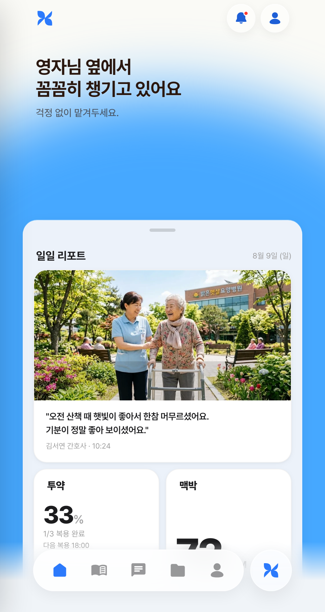
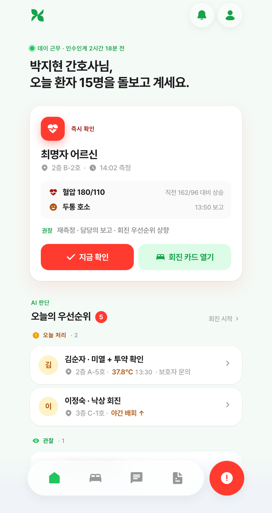

요양시설 케어 커뮤니케이션 · 학생 설계 프로젝트
한 번 입력하면
네 방향으로 도착합니다
요양시설의 보호자 · 어르신 · 요양보호사 · 의료진 네 역할을 하루 한 번의 안부로 잇습니다.
네 역할은 각각 별도의 앱을 씁니다.

01 · 입력
요양보호사
식사 · 투약 · 활동 · 위생 · 특이사항.
하루 5분 이내

02 · 도착
보호자(가족)
하루 한 번 일일 리포트.
사진 · 요양보호사와 대화

03 · 도착
환자(어르신) · 태블릿
큰 버튼 안부 확인.
가족 메시지 수신

04 · 도착
의료진
상태 변화 타임라인.
확인 · 지시
요양보호사가 추가로 하는 일은 없습니다
새 기록을 더 쓰게 하지 않습니다. 이미 남기고 있는 기록을 재사용해 네 역할에게 각자의 언어로 전달합니다.
업무가 늘면 현장에서 쓰이지 않는다는 것을 전제로 설계했습니다.
요양보호사 한 분이 돌보는 어르신은 지금 1.5~1.9명입니다. 한국개발연구원은 2040년 3.0~3.7명이 될 것으로 전망했습니다(KDI, 2026.4). 약 두 배입니다.
가족에게 전화할 시간은 줄어드는 것이 아니라 구조적으로 사라집니다. 저희는 그 전화를 대신하려는 것이 아니라, 그 전화가 없어도 가족이 불안하지 않게 만들려고 합니다.
화면 39개
4역할 전체의 고충실도 프로토타입. 언어 변형 포함 67개 파일. 클릭해서 동작합니다.
공개 배포 중
지금 바로 열어보실 수 있습니다.
haruanbu.site
법 조문 대조 완료
개인정보보호법 · 의료법 · 노인장기요양보험법을 조문 단위로 대조해 설계에 반영했습니다.
팀 내부용 · 주머니에 넣고 다닐 것
현장 카드
KHF 2026 · 8/19~21 · 코엑스 3층 C·D홀 | 우리는 부스가 없다. 서서, 2분 안에.
10초 첫 문장
"안녕하세요, ○○대에서 요양시설 가족 소통 앱을 설계한 학생팀입니다.
파는 게 아니라 현장 의견을 들으러 왔습니다."
영업으로 분류되면 즉시 차단된다. 학생이라고 먼저 밝히면 방어가 내려가고 오히려 도와주려 한다.
60초 폰으로 화면 딱 2장
- 1. 요양보호사 오늘 — "요양보호사가 5분 안에 이것만 입력하면"
- 2. 가족 리포트 — "가족한테 이렇게 갑니다. 한 번 입력, 네 방향"
4역할 다 보여주려 하면 집중력이 먼저 끊긴다. 두 장이 한계다.
3분 관심을 보이면 하나 더
- 어르신 본인 앱 — "장기요양 입소시설을 대상으로는 확인하지 못했습니다"까지만 말한다.
한정어를 빼고 "우리뿐"이라고 하면 케어옵스(시니어타운 입주민 앱)로 그 자리에서 반박당한다.
"어르신이 진짜 써요?"가 나오면 대화가 시작된 것
우리가 물어볼 것 — 이게 더 중요하다
- 시설이 새 시스템 도입을 실제로 누가 결정합니까?
원장인지 법인 사무국인지 지자체인지 — 가장 값진 정보
- 요양시설에 가족앱 넣을 때 제일 걸리는 게 뭐예요?
개인정보인지, 업무 추가인지, 비용인지
- 가족앱 만들어놨는데 안 쓰이는 이유가 뭐라고 보세요?
- 보호자 컴플레인은 주로 어떤 겁니까?
하지 말 것
- 초고령사회 통계 · 시장 규모 얘기 — 업계 사람 앞에서는 모욕
- 화면 10장 이상 넘기기
- 제안서 PDF 꺼내기 — 서서 못 읽는다
- "혁신 · 최초 · 패러다임"
- 소개서를 먼저 건네기 — 대화 전에 주면 버려진다. 헤어질 때 준다
- 3명이 뭉쳐 다니기 — 부스가 부담스러워한다. 흩어지거나 2+1
출발 전 장비 점검
화면 3장 스크린샷으로도 폰에 저장 (전시장 와이파이는 죽는다)
브라우저 탭 3개 미리 열어두기
밝기 100% 고정 · 자동잠금 끄기 · 저전력 모드 끄기
보조배터리
명함 (뒷면 QR) · 소개서 20부 · 이 카드
하루 목표
1인당 명함 7장
컨퍼런스 세션 2개 이상 참석 — 발표자가 곧 접촉 대상
당일 저녁 후속 메일 — 48시간 넘기면 잊힌다
메모 카드에 그 자리에서 적기 — 나중에 기억 안 난다
팀 내부용 · 부스 한 곳당 한 장
현장 메모
무엇 하는 곳
1. 시설이 새 시스템 도입을 실제로 누가 결정합니까?
2. 가족 문의는 어떤 경로로 옵니까? 누가 받습니까?
4. 가족앱을 만들어놔도 안 쓰이는 이유가 뭐라고 보십니까?
5. 기록이 자동으로 가족에게 간다면, 뭐가 걱정되십니까?
가장 중요. 우리 서비스에 대한 반박을 미리 수집한다 — "항의가 늘 것"이라는 답도 성과다
상대가 시설 실무자면 두 개 더
반응
화면을 실제로 봤다
환자 본인 앱에 반응했다
먼저 질문을 했다
명함을 줬다
다시 연락해도 된다고 했다
후속
당일 저녁 메일 발송
추가 자료 요청받음 — 무엇:
미팅 약속 — 일시:
가망 없음 (이유 아래)
한 줄 요약 — 이 사람에게서 배운 것